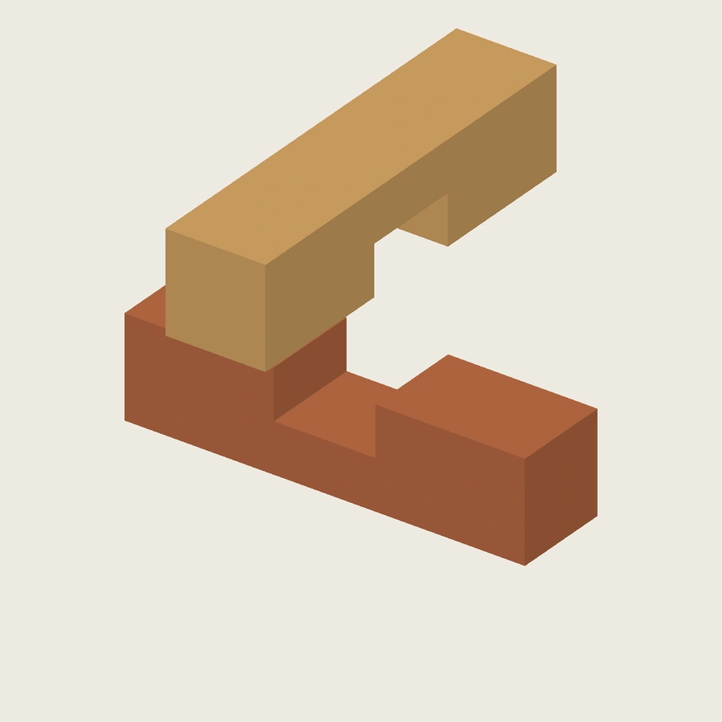
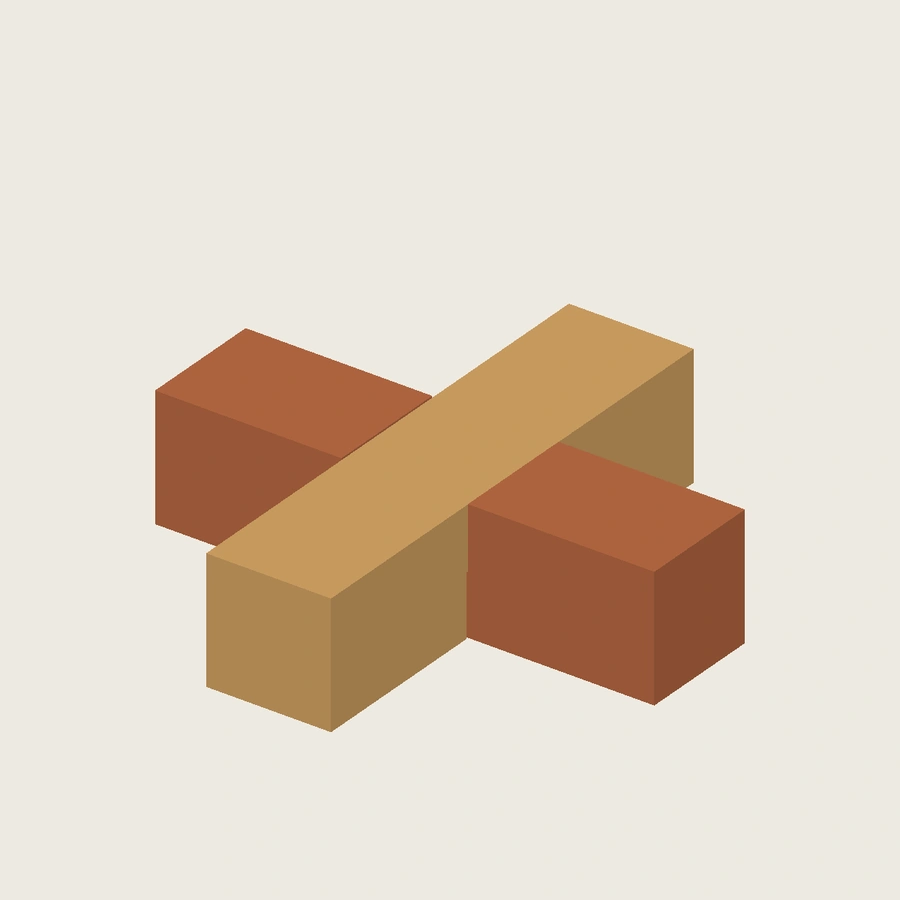

原生母版已建立，精确文件留在本地
母版由 FreeCAD 参数表、完全约束草图、PartDesign 拉伸和切除组成，不是 STEP 改存。已保存名义、浅槽、深槽三个独立配置，并在独立进程重开、改参和恢复。本页仅展示静态图与检查摘要；不提供原生母版、STEP、STL 或交互网格下载，未同步 Onshape。
装合与拆分

槽深误差三态：先说明边界条件
沿用正文定义：A 底面固定，槽底接触时 B 的高度差 h=T−d₁−d₂。以下是设计算例和 CAD 检查，不是实测值或推荐补偿量。
| 状态 | 相对名义槽深 | 自由落位 | 外框强制共面 |
|---|---|---|---|
| 浅槽 | A −0.2 mm；B 不变 | B 抬高 0.2 mm | 刚体干涉，不能强压视为装合 |
| 名义 | 两槽各半厚 | 共面且槽底接触 | 同一位置 |
| 深槽 | A +0.2 mm；B 不变 | B 下沉 0.2 mm | 槽底间隙 0.2 mm |
“槽底间隙”不是两实体所有表面的最小距离：槽侧壁的配合间隙可能更小，验证时分开记录。

这一轮验证到了哪里
- 每个配置：2 件有效实体、4 张完全约束草图。
- 三个配置分别重开重算；独立进程共 18 次改参测试，恢复后未改写保存的源文件。
- 三套 STEP 与独立几何构造匹配；六份 STL 水密、绕向一致，体积和包围盒相符。
- 每个配置沿装入轴取 49 个位置，步长 1 mm，未发现体积相交；越过停止位置的负对照出现预期干涉。
- 本地 GLB：两件、一条拆分动画；单位与位移数据已核对。
离散采样不是连续扫掠证明，也没有覆盖整个参数空间。打印配合、层方向、剩余截面破坏与重复拆装仍待实验；不升级 PRINT_VERIFIED，Gate A 未通过。